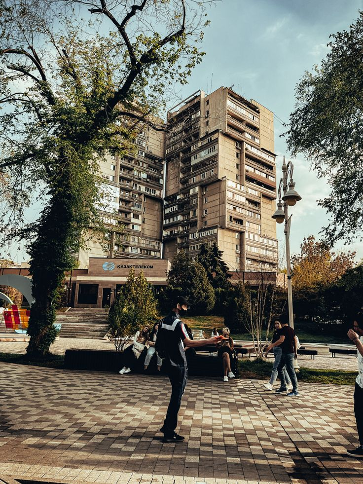

Arbat – The Heart of Strolling Almaty
The Almaty Arbat is the pedestrian zone on Zhibek Zholy Street, located in the very center of the city. It is a favorite spot for walking, relaxing, and enjoying cultural life for both residents and tourists. The area radiates creativity and street art vibes.
- Length: about 1 km
- Location: Zhibek Zholy Street, between Abylai Khan and Nazarbayev Streets
- Main features: fountains, benches, street artists, souvenirs
What to See and Do?
- 🨠Street artists – will draw your portrait or a landscape
- 🵠Musicians and performers – create a lively atmosphere
- 🛠Market stalls – souvenirs and handmade crafts
- ☕ Outdoor cafes and coffee shops – perfect for relaxing in the fresh air
- 📸 Photo zones and installations – great for Instagram
How to Get There?
📠City center of Almaty (Zhibek Zholy area)
🚇 Nearest metro: Zhibek Zholy station
🚌 Buses: No. 2, 32, 65, 98
Entry Price:
💰 Free (walking, photography, street performances)
💰 Paid – only for goods and services on site
Arbat is the soul of Almaty where city life, culture, and creativity come together! 🖼🎶🌸
PHOTOS
